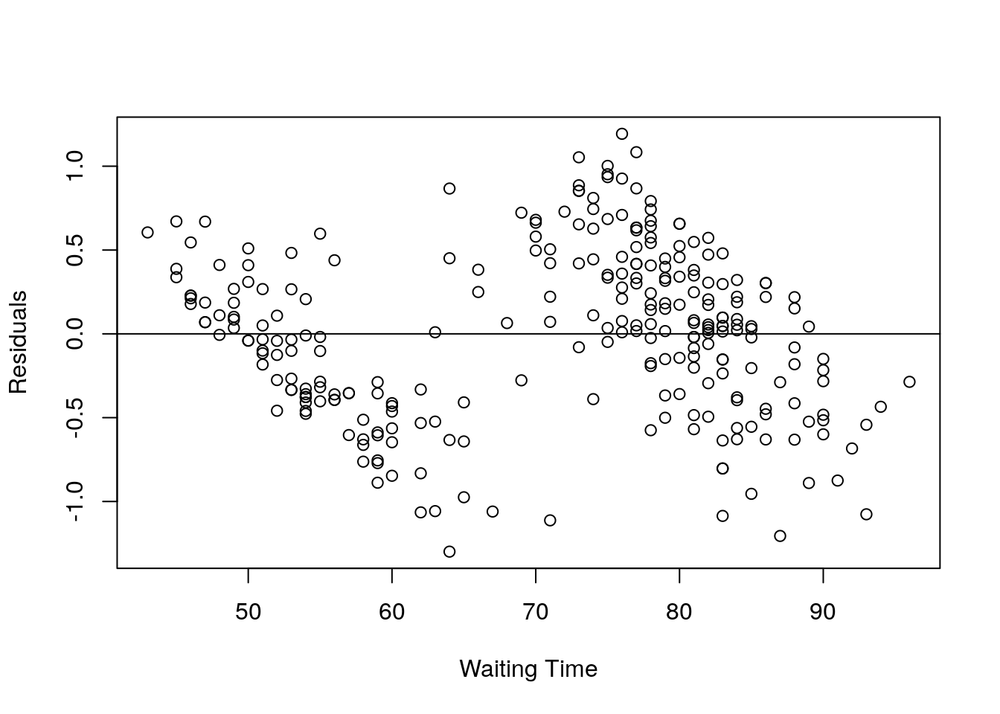
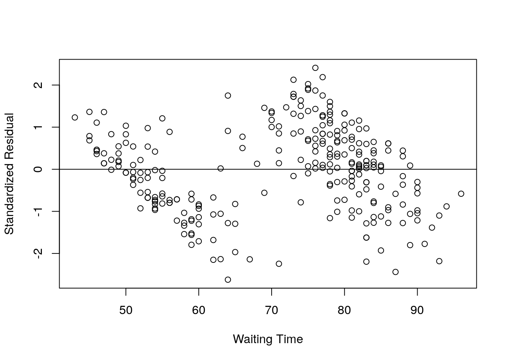
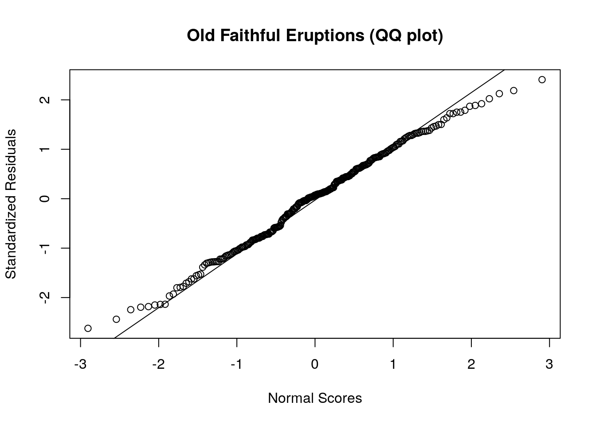
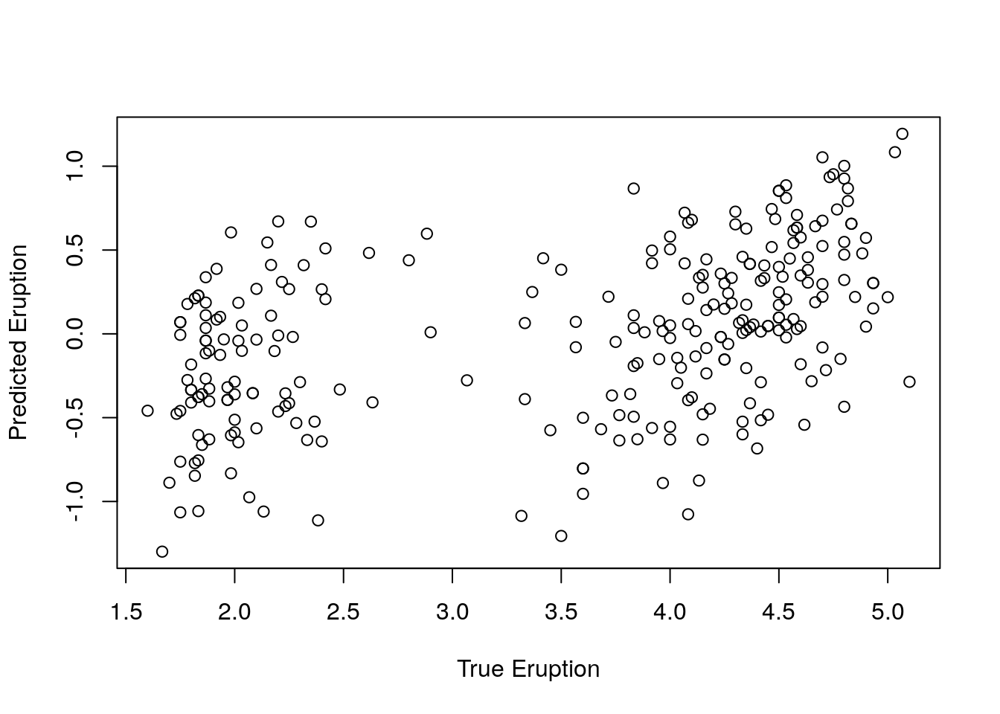
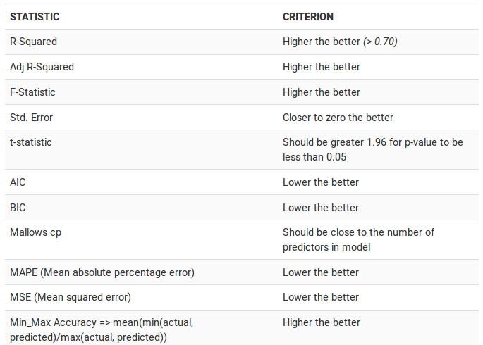

Chapter 10 Regression
10.1 Simple linear Regression
10.1.1 Build model
## eruptions waiting
## 1 3.600 79
## 2 1.800 54
## 3 3.333 74
## 4 2.283 62
## 5 4.533 85
## 6 2.883 55##
## Call:
## lm(formula = eruptions ~ waiting, data = faithful)
##
## Coefficients:
## (Intercept) waiting
## -1.87402 0.07563Now that we have built the linear model, we also have established the relationship between the predictor and response in the form of a mathematical formula for eruptions as a function for waiting time.
For the above output, you can notice the ‘Coefficients’ part having two components: Intercept: -1.87402, waiting: 0.07563. These are also called the beta coefficients. In other words,
eruptions = Intercept + (β ∗ waiting)
eruptions = −1.87402 + 0.07563∗ waiting
10.1.2 Obtain model summary (Linear Regression Diagnostics)
##
## Call:
## lm(formula = eruptions ~ waiting, data = faithful)
##
## Residuals:
## Min 1Q Median 3Q Max
## -1.29917 -0.37689 0.03508 0.34909 1.19329
##
## Coefficients:
## Estimate Std. Error t value Pr(>|t|)
## (Intercept) -1.874016 0.160143 -11.70 <2e-16 ***
## waiting 0.075628 0.002219 34.09 <2e-16 ***
## ---
## Signif. codes: 0 '***' 0.001 '**' 0.01 '*' 0.05 '.' 0.1 ' ' 1
##
## Residual standard error: 0.4965 on 270 degrees of freedom
## Multiple R-squared: 0.8115, Adjusted R-squared: 0.8108
## F-statistic: 1162 on 1 and 270 DF, p-value: < 2.2e-16Now the linear model is built and we have a formula that we can use to predict the dist value if a corresponding speed is known. Is this enough to actually use this model? NO! Before using a regression model, you have to ensure that it is statistically significant. How do you ensure this?
We need to understand the following parameters
- model coefficients
- Statistical significance of overrall model (model p value)
- Statistical significance of individual coefficients (p value of coefficients)
- t statistics or test statistics
- Residuals and Standard residuals
- R-squared and Adjusted R-squared
- Residual standard error
- AIC and BIC
- Use the model to predict new dataset
We will explore these one by one
10.1.3 Model coefficients
## (Intercept) waiting
## -1.87401599 0.07562795## (Intercept) waiting
## -1.87401599 0.0756279510.1.4 Model significance and Coefficient significance
The summary statistics above tells us a number of things. One of them is the model p-Value (bottom last line) and the p-Value of individual predictor variables (extreme right column under ‘Coefficients’).
p-Values are very important because, We can consider a linear model to be statistically significant only when both these p-Values are less that the pre-determined statistical significance level, which is ideally 0.05. This is visually interpreted by the significance stars at the end of the row. The more the stars beside the variable’s p-Value, the more significant the variable.
Null and alternate hypothesis : In Linear Regression, the Null Hypothesis is that the coefficients associated with the variables is equal to zero. The alternate hypothesis is that the coefficients are not equal to zero (i.e. there exists a relationship between the independent variable in question and the dependent variable).
Check pvalue and based on significance level (e.g. 0.05) decide whether to reject null hypothesis or not. If p value is < significance level (e.g. 0.05), we can say that there is a strong evidence exist to reject the null hypothesis and we are 95% confident about this.
You can see that p value of model is 2.2e-16 which is < 0.05 so we can reject null hypothesis (beta coefficients are zero i.e. slope is 0 i.e. no relation between X and Y i.e. no relation between explanatory and dependent variable). Hence there is a significant relationship between the variables in the linear regression model of the data set faithful.
t-value
We can interpret the t-value something like this. A larger t-value indicates that it is less likely that the coefficient is not equal to zero purely by chance. So, higher the t-value, the better.
Pr(>|t|) or p-value is the probability that you get a t-value as high or higher than the observed value when the Null Hypothesis (the β coefficient is equal to zero or that there is no relationship) is true. So if the Pr(>|t|) is low, the coefficients are significant (significantly different from zero). If the Pr(>|t|) is high, the coefficients are not significant.
It is absolutely important for the model to be statistically significant before we can go ahead and use it to predict (or estimate) the dependent variable, otherwise, the confidence in predicted values from that model reduces and may be construed as an event of chance.
10.1.5 Coefficient of Determination or R-squared
The actual information in a data is the total variation it contains. What R-Squared/coefficient of determination tells us is the proportion of variation in the dependent (response) variable that has been explained by this model. Higher the value, better is the model fit to data. We don’t necessarily discard a model based on a low R-Squared value. Its a better practice to look at the AIC and prediction accuracy on validation sample when deciding on the efficacy of a model.
## List of 11
## $ call : language lm(formula = eruptions ~ waiting, data = faithful)
## $ terms :Classes 'terms', 'formula' language eruptions ~ waiting
## .. ..- attr(*, "variables")= language list(eruptions, waiting)
## .. ..- attr(*, "factors")= int [1:2, 1] 0 1
## .. .. ..- attr(*, "dimnames")=List of 2
## .. .. .. ..$ : chr [1:2] "eruptions" "waiting"
## .. .. .. ..$ : chr "waiting"
## .. ..- attr(*, "term.labels")= chr "waiting"
## .. ..- attr(*, "order")= int 1
## .. ..- attr(*, "intercept")= int 1
## .. ..- attr(*, "response")= int 1
## .. ..- attr(*, ".Environment")=<environment: R_GlobalEnv>
## .. ..- attr(*, "predvars")= language list(eruptions, waiting)
## .. ..- attr(*, "dataClasses")= Named chr [1:2] "numeric" "numeric"
## .. .. ..- attr(*, "names")= chr [1:2] "eruptions" "waiting"
## $ residuals : Named num [1:272] -0.5006 -0.4099 -0.3895 -0.5319 -0.0214 ...
## ..- attr(*, "names")= chr [1:272] "1" "2" "3" "4" ...
## $ coefficients : num [1:2, 1:4] -1.87402 0.07563 0.16014 0.00222 -11.70212 ...
## ..- attr(*, "dimnames")=List of 2
## .. ..$ : chr [1:2] "(Intercept)" "waiting"
## .. ..$ : chr [1:4] "Estimate" "Std. Error" "t value" "Pr(>|t|)"
## $ aliased : Named logi [1:2] FALSE FALSE
## ..- attr(*, "names")= chr [1:2] "(Intercept)" "waiting"
## $ sigma : num 0.497
## $ df : int [1:3] 2 270 2
## $ r.squared : num 0.811
## $ adj.r.squared: num 0.811
## $ fstatistic : Named num [1:3] 1162 1 270
## ..- attr(*, "names")= chr [1:3] "value" "numdf" "dendf"
## $ cov.unscaled : num [1:2, 1:2] 0.10403 -0.00142 -0.00142 0.00002
## ..- attr(*, "dimnames")=List of 2
## .. ..$ : chr [1:2] "(Intercept)" "waiting"
## .. ..$ : chr [1:2] "(Intercept)" "waiting"
## - attr(*, "class")= chr "summary.lm"## [1] 0.8114608Now thats about R-Squared. What about adjusted R-Squared? As you add more X variables to your model, the R-Squared value of the new bigger model will always be greater than that of the smaller subset. This is because, since all the variables in the original model is also present, their contribution to explain the dependent variable will be present in the super-set as well, therefore, whatever new variable we add can only add (if not significantly) to the variation that was already explained. It is here, the adjusted R-Squared value comes to help. Adj R-Squared penalizes total value for the number of terms (read predictors) in your model. Therefore when comparing nested models, it is a good practice to look at adj-R-squared value over R-squared.
In this example since we had only one explanatory variable i.e. waiting, both R-squared and adjusted R-squared value remains same.
10.1.6 Standard Error and F-Statistic
Both standard errors and F-statistic are measures of goodness of fit. Standard error should be low (Closer to 0 is better) and higher F-statistics is better.
##
## Call:
## lm(formula = eruptions ~ waiting, data = faithful)
##
## Residuals:
## Min 1Q Median 3Q Max
## -1.29917 -0.37689 0.03508 0.34909 1.19329
##
## Coefficients:
## Estimate Std. Error t value Pr(>|t|)
## (Intercept) -1.874016 0.160143 -11.70 <2e-16 ***
## waiting 0.075628 0.002219 34.09 <2e-16 ***
## ---
## Signif. codes: 0 '***' 0.001 '**' 0.01 '*' 0.05 '.' 0.1 ' ' 1
##
## Residual standard error: 0.4965 on 270 degrees of freedom
## Multiple R-squared: 0.8115, Adjusted R-squared: 0.8108
## F-statistic: 1162 on 1 and 270 DF, p-value: < 2.2e-16## value numdf dendf
## 1162.063 1.000 270.000Here numdf is numerator degree of freedom [number of variables - 1]. We have two variables, eruptions and waiting. So numdf = 2-1 i.e. 1
dendf is denominator degree of freedom which is number of observations - number of variables. dim(faithful) says 272 observations. So 272-number of variables i.e. 272-2 = 270.
10.1.7 AIC and BIC
The Akaike’s information criterion - AIC (Akaike, 1974) and the Bayesian information criterion - BIC (Schwarz, 1978) are measures of the goodness of fit of an estimated statistical model and can also be used for model selection.
For model comparison, the model with the lowest AIC and BIC score is preferred.
## [1] 395.0159## [1] 405.833310.1.8 Residuals and Residual plot
Residual is the difference between observed and predicted value of y.
## 1 2 3 4 5 6
## -0.50059190 -0.40989320 -0.38945216 -0.53191679 -0.02135959 0.59747885## 1 2 3 4 5 6
## -0.50059190 -0.40989320 -0.38945216 -0.53191679 -0.02135959 0.59747885Residual plot
X = faithful$waiting;
Y = resid(eruption.lm);
plot(X,Y, xlab="Waiting Time", ylab="Residuals");
abline(0,0); It can be seen that there are much difference between observed and predicted value.
Standardized Residual
The standardized residual is the residual divided by its standard deviation.
## 1 2 3 4 5 6
## -1.01073883 -0.82944175 -0.78589633 -1.07413200 -0.04318464 1.20863241X = faithful$waiting;
Y = rstd;
plot(X,Y, xlab="Waiting Time", ylab="Standardized Residual");
abline(0,0);
Normal Probability Plot of Residuals
Check whether the residuals show normal distribution or not?
qqnorm(rstd, ylab="Standardized Residuals", xlab="Normal Scores", main="Old Faithful Eruptions (QQ plot)")
qqline(rstd) 
Correlation between observed and predicted Y (Model fitness)
Ypred = resid(eruption.lm);
Ytrue = faithful$eruptions;
# Correlation testing
cor.test(Ytrue, Ypred);##
## Pearson's product-moment correlation
##
## data: Ytrue and Ypred
## t = 7.9204, df = 270, p-value = 6.204e-14
## alternative hypothesis: true correlation is not equal to 0
## 95 percent confidence interval:
## 0.3324440 0.5259831
## sample estimates:
## cor
## 0.4342111Correlation: 0.43 suggesting positive correlation
Pvalue < 0.05 suggesting significant association
Correlation plot

10.1.9 How to know if the model is best fit for your data?

source: http://r-statistics.co/Linear-Regression.html
10.1.10 Lets predict a new dataset using the built model
## waiting
## 1 80## 1
## 4.17622## (Intercept) waiting
## -1.87401599 0.07562795## (Intercept)
## 4.17622Confidence Interval and Prediction interval for Linear Regression
Assume that the error term ϵ in the simple linear regression model is independent of x, and is normally distributed, with zero mean and constant variance.
For a given value of x, the interval estimate of the dependent variable y is called the prediction interval.
For a given value of x, the interval estimate for the mean of the dependent variable, ¯y , is called the confidence interval.
Using the testdataset, predict the 95% prediction interval of the eruption and 95% confidence interval for mean eruption, for the waiting time 80.
## waiting
## 1 80# The 95% confidence interval of the mean eruption duration for the waiting time of 80 minutes is between 4.1048 and 4.2476 minutes.
predict(object = eruption.lm, newdata = testdata, interval = "confidence");## fit lwr upr
## 1 4.17622 4.104848 4.247592#The 95% prediction interval of the eruption duration for the waiting time of 80 minutes is between 3.1961 and 5.1564 minutes.
predict(object = eruption.lm, newdata = testdata, interval = "prediction");## fit lwr upr
## 1 4.17622 3.196089 5.15635110.2 Multiple Linear Regression
A multiple linear regression (MLR) model describes a dependent variable y by independent variables x1, x2, …, xp (p > 1).
Lets consider stackloss dataset desribing observations from a chemical plant operation.
stackloss is a data frame with 21 observations on 4 variables.
- Air Flow Flow of cooling air
- Water Temp Cooling Water Inlet Temperature
- Acid Conc. Concentration of acid [per 1000, minus 500]
- stack.loss Stack loss
“Obtained from 21 days of operation of a plant for the oxidation of ammonia (NH3) to nitric acid (HNO3). The nitric oxides produced are absorbed in a countercurrent absorption tower”. For details type ?stackloss
## Air.Flow Water.Temp Acid.Conc. stack.loss
## 1 80 27 89 42
## 2 80 27 88 37
## 3 75 25 90 37
## 4 62 24 87 28
## 5 62 22 87 18
## 6 62 23 87 1810.2.1 Build multiple regression model
In this model we try to predict stack loss (y) using x (air flow, water temp and acid conc). Lets change the column labels.
## Airflow Watertemp Acidconc Stackloss
## 1 80 27 89 42
## 2 80 27 88 37
## 3 75 25 90 37
## 4 62 24 87 28
## 5 62 22 87 18
## 6 62 23 87 18##
## Call:
## lm(formula = Stackloss ~ Airflow + Watertemp + Acidconc, data = stackloss)
##
## Coefficients:
## (Intercept) Airflow Watertemp Acidconc
## -39.9197 0.7156 1.2953 -0.1521We have now 4 coefficients.
- Intercept
- Airflow
- Watertemp
- Acidconc
Lets summarise the model
##
## Call:
## lm(formula = Stackloss ~ Airflow + Watertemp + Acidconc, data = stackloss)
##
## Residuals:
## Min 1Q Median 3Q Max
## -7.2377 -1.7117 -0.4551 2.3614 5.6978
##
## Coefficients:
## Estimate Std. Error t value Pr(>|t|)
## (Intercept) -39.9197 11.8960 -3.356 0.00375 **
## Airflow 0.7156 0.1349 5.307 5.8e-05 ***
## Watertemp 1.2953 0.3680 3.520 0.00263 **
## Acidconc -0.1521 0.1563 -0.973 0.34405
## ---
## Signif. codes: 0 '***' 0.001 '**' 0.01 '*' 0.05 '.' 0.1 ' ' 1
##
## Residual standard error: 3.243 on 17 degrees of freedom
## Multiple R-squared: 0.9136, Adjusted R-squared: 0.8983
## F-statistic: 59.9 on 3 and 17 DF, p-value: 3.016e-09Model significance
Model pvalue observed is 3.016e-09. So model is significant at 0.05 significance level. so we are 95% confident that prediction of Y from X is significant i.e. there is definitely some degree of association exists between Y and X.
Coefficients significance
- Intercept pvalue is 0.00375 (< 0.05) so significant **
- Airflow pvalue 5.8e-05 (< 0.001) so highly significant ***
- Watertemp pvalue 0.00263 (, 0.05) so significant **
- Acidconc pvalue 0.34405 (> 0.05) so not significant
So except Acidconc, we can say with 95% confidence that for other variables like Airflow and Watertemp, some degree of association with Stackloss exists.
R-squared
Multiple R-squared: 0.9136 means the regression model explains 91% of data variation. However since multiple X variables are involved, we should look at adjusted R-squared values (0.8983)
Residual standard error
3.243 on 17 degree of freedom. This may not be useful for a single model, however we can use this to compare the model with other alternative models.
Use model to predict test dataset
testdata = data.frame(Airflow=72, Watertemp=20, Acidconc=85)
testdata_result = predict(object = stackloss.lm, testdata);
testdata_result;## 1
## 24.58173Measure 95% confidence interval
## fit lwr upr
## 1 24.58173 20.21846 28.945So we are 95% confident that the mean stackloss will be between 20.21 to 28.94
Measure 95% prediction interval
## fit lwr upr
## 1 24.58173 16.4661 32.69736So we are 95% confident that the predicted stackloss will be between 16.46 to 32.69